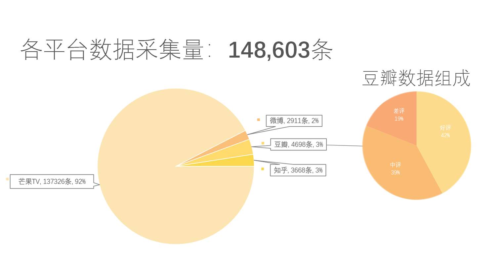
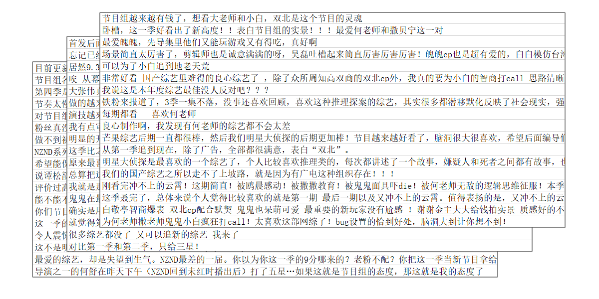
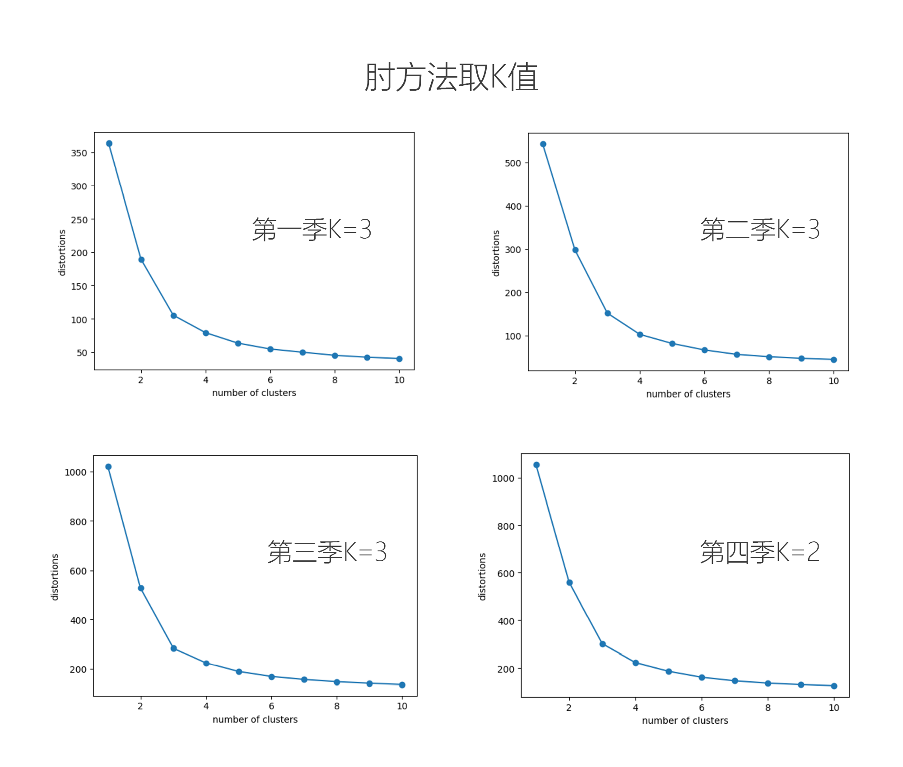
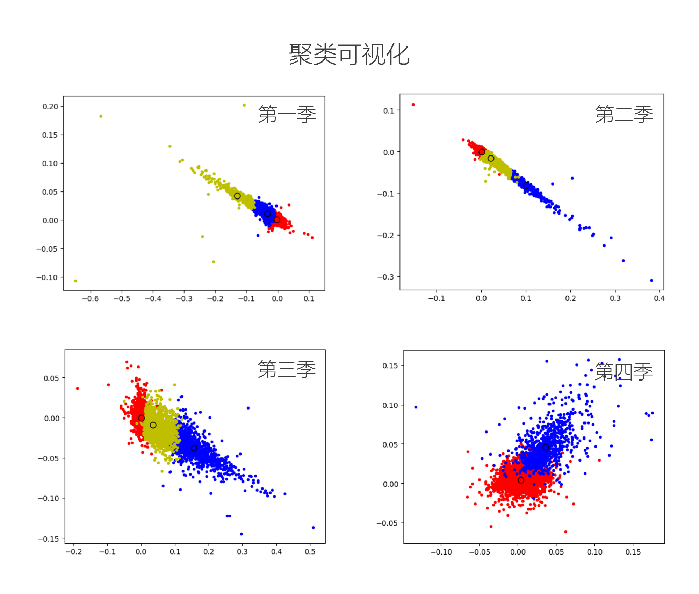
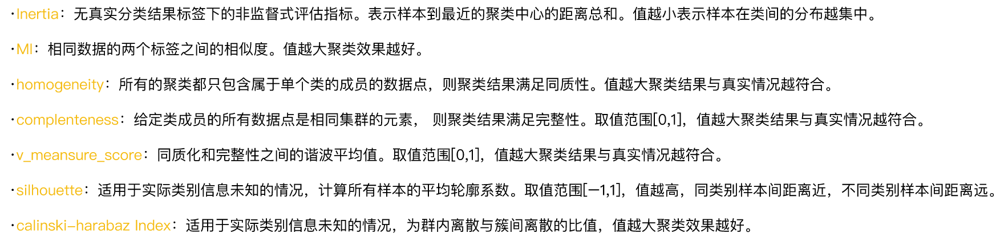
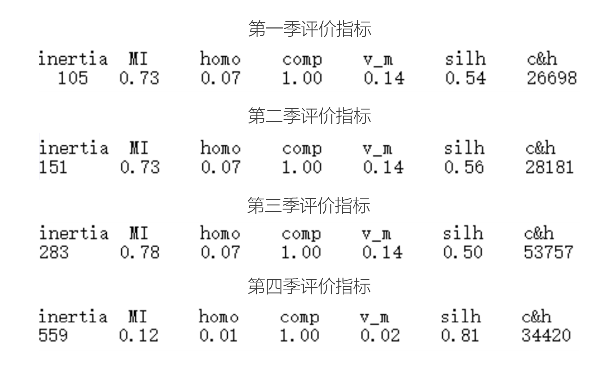
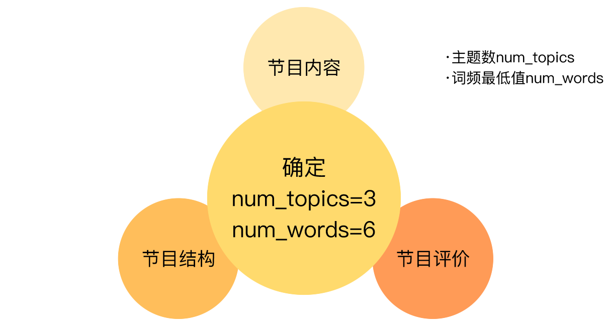

一档明星推理真人秀网综《明星大侦探》从众多同质化网综中脱颖而出。从芒果TV官方平台播放量来看，已完结的四季节目分别高达12.1亿、23 亿、37.3 亿和 25.3 亿；从豆瓣评分来看，第一季 9.2，第二季 9.0，第三季 9.1，第四季 8.7，豆瓣社区平均每季 5 万+人参与评价，微博话题阅读量超 141 亿、话题讨论达 1840.9万次，掀起一场全民推理狂潮。本篇分析选择《明星大侦探》系列中综合表现最突出的第三季作为研究对象，通过数据爬取，数据处理，使用情感极性分析、基于划分的K-means聚类分析、基于LDA模型的文本主题聚类等算法进行数据分析，研究该综艺脱颖而出的原因，并进一步扩展探讨，为推理类网综提供启示和建议。
数据分析流程
|  |  |
|  | |
|  | |
|  |  |
|  |
| 明星大侦探关于节目内容的词云图 |
| 明星大侦探关于节目结构的词云图 |
| 明星大侦探关于节目评价的词云图 |
| 根据数据分析后得到的三个主题：节目结构、节目内容、节目评价，为“如何打造一档爆款推理网综？”给出以下参考建议。 |